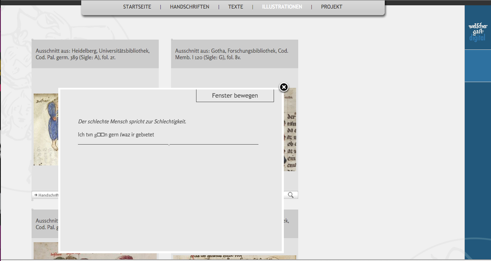
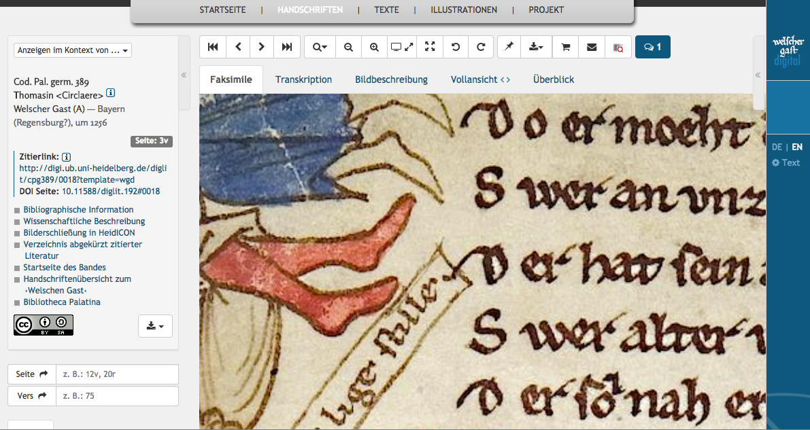
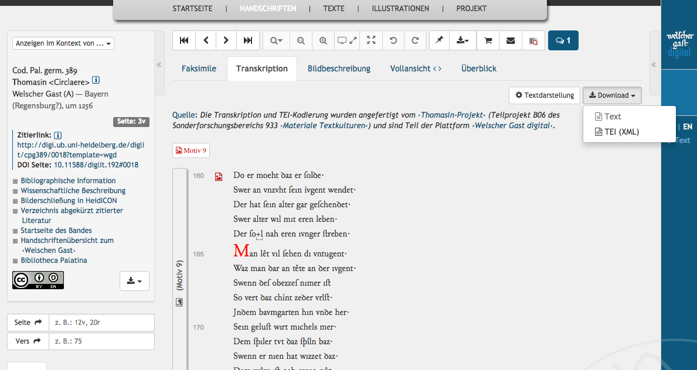
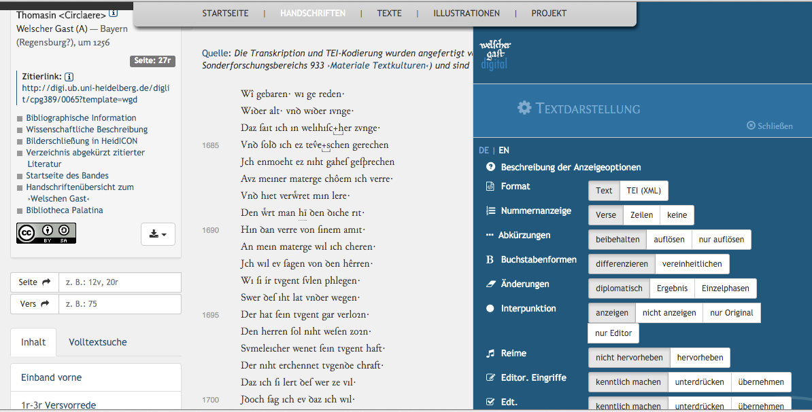
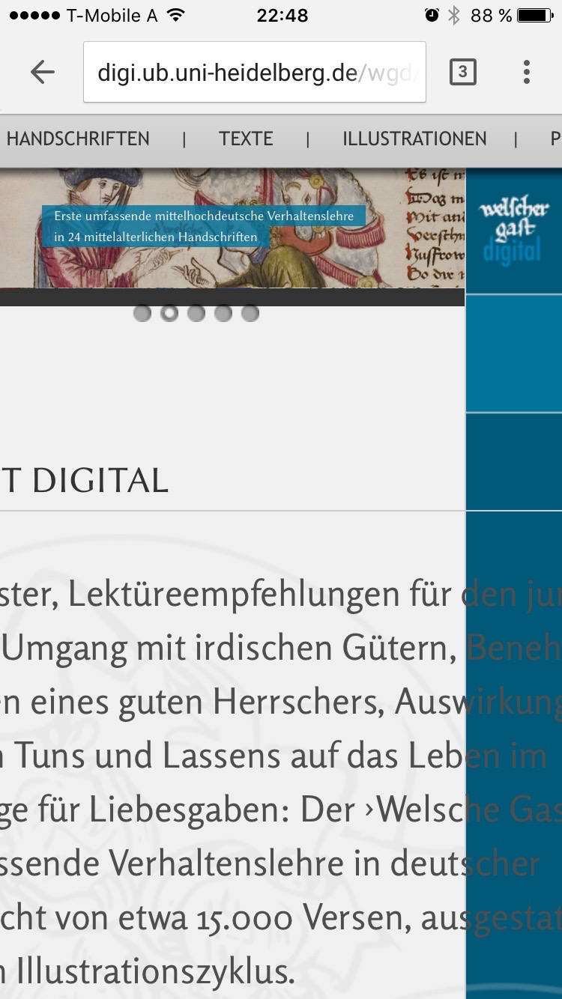
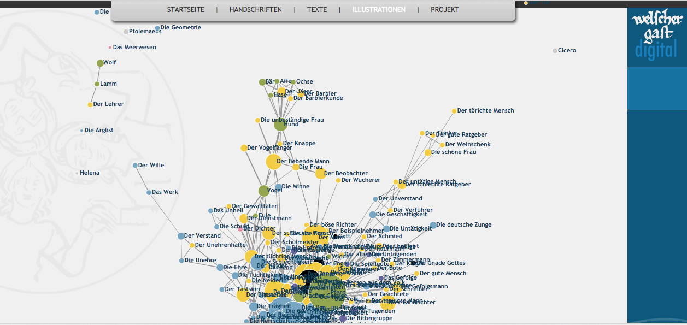
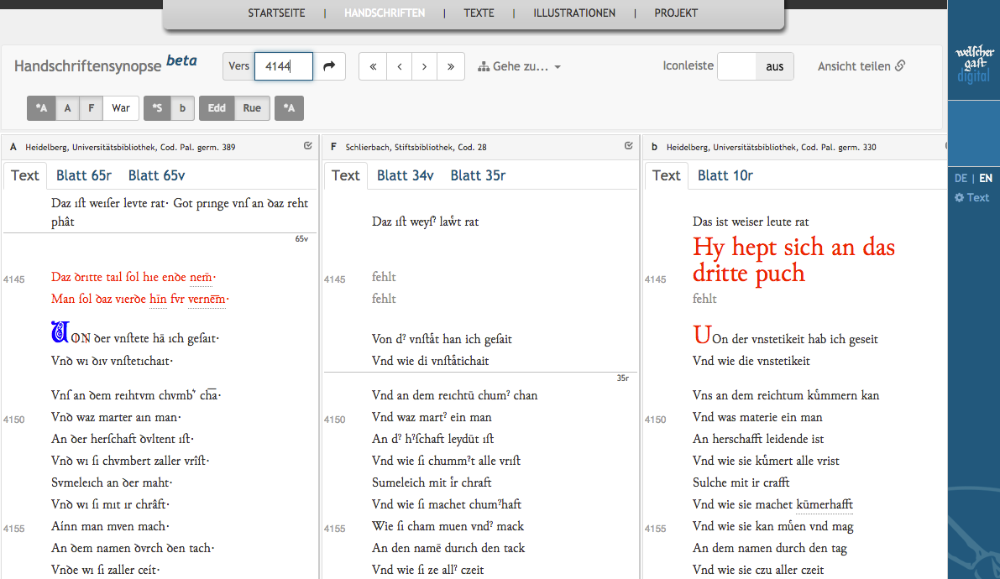

Welscher Gast digital
Table of Contents
Abstract
This review discusses the Digital Scholarly Edition Welscher Gast digital that is conducted as part of the German Research Foundation special research programme Materiale Textkulturen. The edition project aims at analysing the production and transmission of the medieval didactic poem Der Welsche Gast (‘The Romance Stranger’; c. 1215/16). The centre of the edition is an easily accessible and easily readable base text. It is conceived as the starting point into different branches of research that tightly combine philological and art historical studies. The edition, which is in the middle stage of its genesis, builds on a sound theoretical model of its source materials and impresses with innovative and interesting display of data and research findings.
Introduction
The didactic poem Der Welsche Gast (‘The Romance Stranger’; c. 1215/16) was written by the broadly educated Thomasîn von Zerclaere (c. 1186-1235), a canon of the cathedral chapter in the Patriarchate of Aquileia under Patriarch Wolfger von Erla. It is a highly appreciated courtly code of conduct aimed at a German-speaking aristocratic lay audience. The work summarises the main ethic, courtly, and Christian norms of that time, and it is based on a vast range of ancient as well as contemporary sources. The structure and scope of the content is Thomasîn’s own achievement, as well as the illustrative examples that include contemporary political and literary references. The work was written with the clear aim to teach its recipients: most of the 25 surviving text witnesses (15 manuscripts, 10 fragments)1, dating back to the 13th to 15th century, contain coloured illustrations that closely follow the content of the ten thematically structured books. The topics range from courtly conduct and a doctrine on courtly love to the classical medieval virtues (staete ‘steadiness’, mâze ‘moderation’, etc.) to a discussion of law and courtly privileges. (Philipowski 2014, Cormeau 1995)
The still running Thomasin Project (2011-2019) is part of the DFG financed special research programme 933 Materiale Textkulturen and focuses on the public accessibility of this illustrated Middle High German (MHG) didactic poem. It is also concerned with the materiality of the poem’s comprehensive transmission with an explicit focus on the text and the illustrations and their interconnection. Thus, it addresses both the desiderata of the accessibility of all text illustrations as well as the transcription of all known text witnesses. The project applies an editorial approach that intends to show the interrelation of illustrations and text as it was originally conceived. The ambitious goal is an up-to-date, sophisticated Digital Scholarly Edition (DSE). Besides providing a digital presentation of the manuscript corpus, the project wishes to introduce an edition that closely interweaves texts and illustrations, based not only on philological but also on art historical research.
This twofold purpose requires an intensive cooperation between philologists, art historians and digital humanists / computer scientists. The project is divided into two project terms with two special focuses: The first was concentrated on the development of a philologically sound text base, the second term has a stronger focus on art-historical research; each term was / is led by project directors with a relevant scholarly background. The general project staff includes a postdoctoral research fellow with philological background and a Ph.D. candidate in art history. Computer assistance is provided by members of the SFB Service Project on Information Management and Information Infrastructure. The website of the edition is hosted on the servers of the Heidelberg University Library and strongly relies on the software architecture of this institution, e.g. for image presentation, and other web content like the art historical descriptions in heidICON .
The current output of the edition is available on the website Welscher Gast digital (WGd). Most of it can be openly accessed. However, due to the presentation of resources from different institutions, the terms of use for this edition are rather complicated. There are no general terms of use. The facsimiles are subject to each libraries’ terms of use, the text of the edition is available open access. The data presently on hand includes:
- the fully digitised and annotated version of the currently most reliable edition (Rückert 1852), XML download available
- based on this edition, a rhyme dictionary and statistical rhyme analyses
- digital images of (nearly) all manuscripts, fragments, and recent transcriptions
- transcription and (partial) annotation of selected text witnesses (sigla: A, F, War, b) , XML download available
- a text synopsis module (beta version)
- bibliographical and art historical description of manuscripts and individual pages (external source)
- art historical motive-index and agent analysis (based on von Kries 1984-1985)
Aims and Methods
The aims and methods of this project are scattered over three different websites: the special researcharea website, the project website, and also the DSE website (aims, methods). Unfortunately, they are also inconsistent in scope and explanation. To some extent, this may relate to the different presentation aims and target audiences of the different websites, but it still implies inconsistency; at least the project website and the DSE should provide concurrent lists of aims and methods.
The overall editorial aim of the project is to produce a modern edition of this literary work with a slightly normalised and corrected reading text that is based on the oldest text witness (Heidelberg, UB, cpg 389). Considering the expected user group of Medieval German philologists, a translation of the historical text is not intended. The normalised version will be used as a base text to make the different transmitted text versions accessible. The edition will be available both online and in print. The detailed bibliographical and art historical description of the codices and fragments strongly focuses on production and transmission marks and is the basis for the spatial analysis of the manuscripts (relation and distribution of text areas, initials, headings, organisation marks, illustrations) which will be linked to the text transcriptions.
The encoding of the transcriptions is based on XML-TEI vocabulary and considers a manuscript- as well as a work-centred perspective. The basic annotation unit is the lemma but the edition will also highlight allographs, describe text revisions and abbreviations, and mark-up rhyme patterns down to word token level. The lemmatisation of the texts includes part-of-speech elements as well as morphological elements. Presently, the lemmata are interlinked with the Mittelhochdeutsches Wörterbuch . This data is the basis for a detailed semi-automatic philological text analysis: differences on the graphemic, dialect, morphological, syntactic, and semantic level can be shown with the help of generic similarity algorithms as well as project specific tools. The project proposes to use phylogenetic analysis to solve stemmatological questions. Biogenetic software will be used to assist classic stemmatology with statistical ratings of the relations between manuscripts and forks in stemmata.
The other focus of the project is art historical research, which concentrates on image indexing by motive, analysis of the figures, gestures, objects, captions and of course on their relationship with the transmitted text. The spatial annotation of image sections for all the illustrations, all individual figures and all captions prepare for a dynamic visualisation of the physical as well as semantic relationship of text and illustrations based on the preliminary work of von Kries (1984-1985). The data (motive-index and agent analysis) can be used for actor-network-analyses of motives and agents in the text and illustrations (cf. below) as well as for computer vision based image analysis.
The DSE wants to provide dynamic apparatuses that shall open new ways of visualising the text by, for example, showing variants along branches of hypothetical stemmata, project variants on geographical maps or visualising variants on a timeline referring to the place and time of the manuscript origin. Yet, the main goal of the project is to answer questions concerning text production in non-typographic cultures; its editorial approach focuses on the semantic annotation of a text as basis for non-linear reading. It also includes a joint commentary on text and illustrations. Philological questions address textual criticism, while art historical research aims at a comparative analysis of illustrations. The project also wants to provide an online tool for digital editing in the future. Unfortunately, this idea is not elaborated in more detail, for example by detailing how this idea relates to similar editing tools that are already available or by advertising the additional value of this new editing tool.
The WGd provides base material for various research interests and in this respect, it satisfies the requirements of a DSE. Even in its uncompleted stage (only very little of the proposed data is available yet, cf. list above), the edition can be the basis for cultural historical research (aristocratic ethics, conduct, order, gestures, identity, ecclesiastical and worldly politics, natural sciences, gender studies, history of science), linguistic research (e.g. on Middle High German as foreign language, poetic vs. didactic language, word studies), or literary research (e.g. on rhyme, meter, source studies, didactics, audience reception).
Data Modelling
The underlying TEI model is provided in meticulous detail not in a
machine-readable schema but in a PDF handbook (Šimek 2014a) on the website. Project
specific Schematron schemas are used for internal validation of the XML files, some
of which can also be downloaded. Nevertheless the exemplary, manuscript-centred XML
file for cpg 389 contains some errors: the <ptr> element is used
irregularly within the <line> element, and several
@xml:id values are assigned two times because the code for the
transliteration of fol. 32r is included twice. The reason for the latter is unclear,
maybe it is because the showcase XML has been prepared by hand. Concerning this
duplication of data, the text presentation provides no clue either: in the viewer the
transliteration shows two identical text panes that only differ in regard to the
colour of the icon for text-image-relationship in the last line (why?); the reference
text is identical again. In the XML file for Rückert’s edition the
<ptr> element is used irregularly, too. The other XML files do
not map this deep level of annotation.
My overview can only provide a short summary of the model; the main
focus lies on the structure of the work as it was set up in Rückert’s edition. This
structure is built with <div> elements where more specific
information is included in the @type attribute (e.g. ‘book’, ‘chapter’)
and line groups that resemble distiches. Book and chapter information is additionally
available in <milestone> elements for easier transformation
between work- and manuscript-centred presentation. Information on the latter (quires,
leaves, pages) is recorded in <surfaceGrp> and
<surface> as well as in <zone> (reference to
illustrations) elements. The smallest text-structuring unit is the line
<l>, which contains apparatus entries <app>
with information on different readings <rdgGrp> and
<rdg>. The model also references manuscript-related information
like page breaks <pb>, column breaks <cb>, or
various other formal data, like numbering, column headings, quire information; for
this purpose the <fw> element is used and supplemented with
different attributes. According to the TEI-Handbuch (Šimek 2014a, §3),
data from this text model and from a separate file mapping the quire structure of a
text witness are combined to generate the manuscript-centred presentation that not
only includes the detailed codicological information but also maps the structure of
the work to the individual manuscript. Organising information is conveyed through
meaningful @xml:id attributes that cannot only be used to identify books
and chapters but also lines as well as additional lines transmitted in certain text
witnesses. Layout information (indents, free line space) is added with attributes
(@rend) or <space> elements.
Illustrations are referred to with <figure> elements,
attributive metadata provides approximate positions (@place) as well as
image coordinates (@facs), the handbook states: ‘Dessen Attribut
@place gibt die ungefähre Position auf der Seite an, @facs verweist
auf einen Koordinatenbereich.’ (Šimek 2014a, 5-6). If ‘Koordinatenbereich’ (‘image
area’) really refers to image coordinates, this usage of the @facs
attribute would probably not conform with the TEI guidelines (TEI 2016, Ch. 11.1,
att.global.facs) although these are not too clear on how to use the attribute with
parts of images. Relative positions in respect to the written text are either shown
by the place of the element within the code (illustration placed between lines) or by
using a <span> element (illustration parallel to several lines).
The text is generally lemmatised on word level, complex word forms are
tokenised: @xml:id attributes indicate line and word count, a reference
attribute (@lemmaRef) refers to the corresponding lemma in the
Mittelhochdeutsches
Wörterbuch
. Abbreviations, rhyme elements as well as original and
editorial punctuation are tagged. Instances of text revision are described in minute
detail as is graphemic information, because this data is central to the research
questions of the project. Special characters are generally represented as Unicode
symbols based on MUFI recommendations, while characters not covered by MUFI are described in
a separate XML-file and annotated with a <g> element.
While these guidelines help to understand the XML-data, a second guide (Šimek 2014b) describes the implementation of this data on the website of the DSE: initials and rubrics are displayed with special characters, meta-information is provided via tool-tips, underlining, special characters, and icons indicating text revisions or abbreviations.
<charDecl> might have
been the better choice in the long run.
Presentation
The website presents the current status of the project work – therefore some parts are not finished yet, some data is not published yet, and some programming solutions are still in beta stage (cf. list of available items in the introduction). Nevertheless, I highly applaud the decision to publish the project data step by step as it is generated during the production process (and I encourage any other project to do the same!). This approach makes an edition and its data not only easier (and earlier) accessible on many different levels but also prepares for a continuous process of perfecting the presentation. However, in order not to confuse the users, choosing this option requires very special care and the edition should constantly remind users of its unfinished state (e.g. special design elements). It is of paramount importance that the users are kept up-to-date, clarifying to which extent the available data represents the overall state of the project (e.g. through checklists, versioning or archiving of software [components] and texts).
The DSE WGd is part of the Heidelberg University library website and to a large extent makes use of its infrastructure. The presentation of the DSE is unified by the website’s core design element, a blue bar-section at the right margin of the screen, which holds the title (it is a bit too small to really brand the web presentation). When the respective data is available, there is also a link to an English layout, and a link to the options menu for the text presentation in this section. However, even more important for the consistent appearance of the presentation is the sticky menu in the head section of the website, which displays links to the main areas of the website: manuscripts, texts, and illustrations. Two more links provide background information: introductory texts on the starting page, background information (aims, methods, analytics, and organisational content) on the project page. The overall navigation of the website is clearly structured and easy to follow.
The manuscript section lists medieval manuscripts with modern handwritten transcriptions, providing a representative thumbnail for each of them, core bibliographical data (shelf-mark, time and place of production, measurements, and illustrations) and philological information (siglum). During the unfinished state of the DSE, which will probably continue for several more years, this would exactly be the place to inform users about the finalisation state of the edition by additionally specifying which text witnesses have already been transcribed and to what extent this transcription is shown as part of the manuscript presentation.
The manuscript can be accessed by clicking on the list item, which opens the starting page of the manuscript viewer, an enhanced version of the standard Heidelberg manuscript viewer. Its standard manuscript starting page displays the manuscript signature (top left), context selection (top middle: users can switch between the WGd view or a presentation in a Bibliotheca Palatina design , the content remains the same), representative thumbnail (top right), standard link set, persistent identifier, modes of interaction (left column: download options for images in two PDF versions that differ in image dimensions but not image resolution, etc.), interactive navigation (page, verse input selection, full text search field, manuscript TOC with page ranges and content information). Compared to the Bibliotheca Palatina design – where this information is put into the centre of the screen – this layout not only marginalises the (important) information but also fails to draw the users’ attention to the main elements and therefore needs an irritating second look as to where the real content is.2 Once successfully opened, the viewer in its base version provides three tabs for facsimile presentation, a horizontally scrollable full screen view of the whole series of pages, and a thumbnail overview. Additionally, the WGd viewer has tabs for text transcription, which holds the main content of the DSE, and art historical descriptions of the page. If one of the elements is not available, the link is (more or less visibly) greyed out.

The Heidelberg viewer software probably is the biggest asset of the project, but at the same time, it might be its biggest limitation. The project uses the base design of the viewer, which in some cases simply does not work: for example, the full text search might be a nice feature for digitised books in modern print and languages, but for an MHG text, which is presented with non-standard letters, it is not efficient. An auto-completion feature or, even better, a word index would help to produce better results, even for a user who knows the text. If there is no text available for a full text search (e.g., Schlierbach, Stiftsbibliothek, Cod. 28), the search field should not be displayed. Some elements of the viewer do not produce visible or comprehensible results (resize, fitting and lightbox button). The shopping-cart-icon, which does not have any tooltip explanation, leads to the terms of use – which is an odd combination of icon and content. In short, the viewer and its interface should be adjusted to the medium presented.
Especially problematic is the lack of a synoptic line-up of manuscript and transcription. To me this mode of presentation should be mandatory for any kind of online text edition that provides digital facsimiles of the source as well as transcriptions of its texts. The synoptic text presentation has means to display facsimile pages but provides no synopsis of transcription and manuscript page. In its current version, this feature is quite useless (but cf. discussion below). In regard to the task itself, a facsimile / transcription synoptic display should by all means be part of the main viewer software. This kind of synoptic view should even be available in a pre-release edition like the WGd. It not only provides users with practical means to verify the work of the editors, but it also puts a stronger focus on the editorial work. At the moment, the viewer setup, which of course displays the newly produced transcriptions of the manuscript sources with all their fine annotations as well as the retro-digitised and annotated Rückert’s edition, still puts the facsimiles in the centre of the DSE and not the edited text. Maybe this impression only arises because at the moment there are just little portions of text available. Or it might be because the Heidelberg viewer for me has a long history as image viewer only. Anyway, this is a problem that needs to be solved in the long run! Matching the visible viewer buttons to the medium and content presented could be one step as obfuscating the redundant buttons with design-matching colours does not work at all.

As indicated above, the real asset of this tab is how the user can tweak the text display options. A clearly visible button within the viewer presentation and a link (though less visible) in the branding section on the right side of the window open the options panel. Here, the user can change the text format (annotated, XML), display of numbering (verse, line, none), abbreviations (annotated, resolved, fully resolved), letter shapes (historical, modern), text revisions (diplomatic, resolved, revision stages), punctuation (all, none, original, editor)3, rhymes (show, hide), editorial changes (show, hide, highlight)4, normalisation (show, hide, highlight)5, columns (yes, no), illustrations (physical reference, text reference), and actors (show, hide). The presentation pane is intuitive and fun to use and it is of immense value for getting to know the edition as well as the literary work.


According to the project-aims, the text of the edition is closely interlinked with art historical data. Clicking the respective areas and icons in the transcription brings the user to the motive pages (e.g. Motiv 1) where the relevant illustrations from all manuscripts are presented in tabular form. The individual images are spatially annotated and actors as well as captions can be selected. Clicking the respective areas produces a movable page overlay with additional information: detailed explanations, statistics, a link to the actor page (e.g. Die Schlechtigkeit)8, or a transcription of the text. Additional links provided for each table asset lead back to the respective manuscript or opens an enlarged, detailed view of the illustration. The viewer in this overlay features image resizing buttons as well as input device response. Unfortunately, the image quality is rather poor, so that users cannot benefit from this feature. Both text and image layers are movable within the browser window and have a clearly visible close-button, which makes gathering information on motives and actors a comfortable experience.


Overall, this synoptic transcription is presented in a plain and simple way that puts working with the data in the centre of the user focus. Once the text presentation pane is working properly and the synopsis software is released, this will be a very valuable and productive tool that will be easy and exciting to use! Talking with Jakub Šimek at the conference of the AG Germanistische Edition in Graz this winter (Feb. 17th-20th 2016), he signalled that the synoptic presentation will be granted release status once all text witness transcriptions are online. However, redesigning some of the features discussed here, would be helpful, too.
Conclusion
Following Patrick Sahle’s definition of a DSE (Sahle 2013, 149), Welscher Gast digital qualifies even in its early, unfinished state. The building on the most recent and most relevant research findings as well as the interconnection of historical edition, modern transliteration, art historically recorded illustrations, and facsimiles provide an ensemble that can only be realised in digital form. Overall, the Welscher Gast digital, like the Jahrrechnungen der Stadt Basel or Jane Austen’s Fictional Manuscripts, is another inspiring example why editing historical sources should always lead to a digital output. Image annotation and presentation and above all the means of interaction with the transcriptions are an impressive example of an edition that follows the digital paradigm. The Welscher Gast digital will be a good example for editing a historical text for different research interests and target audiences. The quality of the materials presented online is mostly excellent; the far-seeing processing and the detailed presentation of the data is thrilling. Due to its complexity, learning how to efficiently use the edition with all its different access points and features will need some time even for experienced users; simply browsing the contents, though, is easy and intuitive.
On the other hand, the present, unfinished state of the DSE calls for some suggestions to improve its overall presentation and usability. Currently, three different websites list aims and methods for the Welscher Gast digital – this information should be summed up and elaborated considerably within the context of the DSE in order to provide a significant and helpful documentation. Actually, Jakub Šimek’s paper (Šimek 2015) to his presentation at the 2014 AG Germanistische Edition conference perfectly provides this kind of information: it definitely should be processed for use within the DSE. The editors do of course state that the edition is work in progress, but it would help to provide the user with more information on the development of the project. For instance, a detailed list of aims, features (software) as well as research work (data) with checked off items that have already been finished would indicate the progress of the whole project, and would make it generally more transparent. All project data (transcriptions, analyses etc.) should be made available in different formats and different technical interfaces; all data and software should be versioned (and archived) as well as described in detail pertaining to their content and state of finalisation. To optimise the presentation of the valuable project work, the website should be analysed and remodelled according to visual common patterns (content presentation) and usability engineering (software design). The quality of the manuscript facsimiles should be considerably improved. The editors should provide suggestions for citing the DSE as well as persistent identifiers for individual data (transcription, image description, etc.). Preferably the citation should not only include the editors (or even better the intellectually responsible parties) but it should also specify the edition type as well as highlight the art historical focus.
This list summarises general problems probably already known to the editors; solving (some of) them would greatly enhance this project. Nevertheless, once finished, this DSE will be an invaluable resource for MHG philology, art history, and cultural history of the Middle Ages. This project clearly has the means to set the stage for other projects, especially in regard to interdisciplinary cooperation and content presentation.
Bibliography
- Cormeau, Christoph. 1995. "Thomasin von Zerklære." In Die deutsche Literatur des Mittelalters. Verfasserlexikon, vol. 9: Siecht, Reinbold - Ulrich von Liechtenstein, founded by Wolfgang Stammler, contd. by Kurt Langosch, 2nd, in collaboration with numerous specialists completely new arranged ed. by Burghart Wachinger in cooperation with Gundolf Keil et al., redacted by Christine Stöllinger-Löser, col. 896-902. Berlin, New York: de Gruyter.
- [Deutsches Literatur-Lexikon], see Philipowski 2014.
- Gamper, Rudolf et al., eds. [w/o date] Handschriftencensus. Eine Bestandsaufnahme der handschriftlichen Überlieferung deutschsprachiger Texte des Mittelalters. http://web.archive.org/web/20160525082228/http://www.handschriftencensus.de/werke/377.
- [Handschriftencensus], see Gamper.
- heidICON - Die Heidelberger Bild- und Multimediadatenbank. [Ed. Universitätsbibliothek Heidelberg.] Accessed 07.06.2016. https://heidicon.ub.uni-heidelberg.de.
- Hofmeister-Winter, Andrea. 2003. Das Konzept einer ‘Dynamischen Edition’ dargestellt an der Erstausgabe des ‘Brixner Dommesnerbuches’ von Veit Feichter (Mitte 16. Jh.). GAG, 706. Göppingen: Kümmerle.
- Jahrrechnungen der Stadt Basel 1535 bis 1610 – digital. Ed. Susanna Burghartz. [2016] Accessed 07.06.2016. http://gams.uni-graz.at/context:srbas.
- Jane Austen’s Fictional Manuscripts. Ed. Kathryn Sutherland and Elena Pierazzo. 2016. Accessed 07.06.2016. http://www.janeausten.ac.uk/.
- Mittelhochdeutsches Wörterbuch. [Ed. Mainzer Akademie der Wissenschaften und der Literatur, Akademie der Wissenschaften zu Göttingen. 2007-2016.] Accessed 07.06.2016. http://www.mhdwb-online.de/.
- MUFI. Medieval Unicode Font Initiative. [Ed. Odd Einar Haugen]. Last update February 2nd 2016. Accessed 07.06.2016. http://folk.uib.no/hnooh/mufi/.
- Philipowski, Katharina. 2014. "Thomasin von Zerklære." In Deutsches Literatur-Lexikon, Das Mittelalter, vol. 6: Das wissensvermittelnde Schrifttum bis zum Ausgang des 14. Jahrhunderts, ed. by Wolfgamg Achnitz, with an introductory essay by Frank Fürbeth, 333-337. Berlin, Boston: de Gruyter.
- Rücker, Heinrich, ed. 1852. Der wälsche Gast des Thomasin von Zirclaria. Bibliothek der gesammten deutschen National-Literatur von der ältesten bis auf die neuere Zeit. Abt. 1, 30. Quendlinburg, Leipzig: Basse. Digital copy (accessed 07.06.2016): http://digi.ub.uni-heidelberg.de/diglit/rueckert1852/0008.
- Sahle, Patrick. 2013. Digitale Editionsformen. Zum Umgang mit der Überlieferung unter den Bedingungen des Medienwandels. Teil 2: Befunde, Theorie und Methodik. Schriften des Instituts für Dokumentologie und Editorik, 9. Norderstedt: Books on demand.
- Šimek, Jakub. 2014a. Welscher Gast digital. TEI-Handbuch. Version 0.6, 15.1.2014. Accessed 07.06.2016. http://digi.ub.uni-heidelberg.de/wgd/pdf/TEI-Handbuch_0-6.pdf.
- Šimek, Jakub. 2014b. Welscher Gast digital. TEI-Visualisierung. With the help of Leonhard Maylein. Version: 0.4, 15.1.2014. Accessed 07.06.2016. http://digi.ub.uni-heidelberg.de/wgd/pdf/TEI-Visualisierung_0-4.pdf.
- Šimek, Jakub. 2015. „Archiv, Prisma und Touchscreen. Zur Methode und Dienlichkeit einer neuen Text-Bild-Edition des Welschen Gastes." In: Vom Nutzen der Editionen. Beiträge der Internationalen Fachtagung der Arbeitsgemeinschaft für germanistische Edition. Aachen 19th-22nd Feb. 2014. Ed. Thomas Bein. Beihefte zu editio, 39. Berlin, Boston, München: de Gruyter.
- TEI Consortium. 2016. TEI P5: Guidelines for Electronic Text Encoding and Interchange. Version 3.0.0. Last updated March 30. Accessed 07.06.2016. http://www.tei-c.org/Vault/P5/.
- von Kries, Friedrich Wilhelm, ed. 1984-1985. Thomasin von Zerclaere: Der Welsche Gast. 4 vols. Göppinger Arbeiten zur Germanistik, 425,1-4. Göppingen: Kümmerle.
Notes
- The project website counts only 24 witnesses. Both the Handschriftencensus as well as the Deutsches Literatur-Lexikon refer to 25 text witnesses. ↑
- There are various studies on screen reading and data visualisation schemes, that identify the top area and the middle left area as the most often looked at areas of the screen, keywords are Z-pattern, F-pattern, Google Golden Triangle. (The Nielsen Norman Group provides an overview of interesting blog articles on this topic). ↑
- Maybe I used the wrong samples, or the data is not available yet, but they did not show differences, for example, between ‘all’ and ‘original’. ↑
- Ibid. ↑
- Ibid. ↑
- For testing the DSE I used a non-retina Macbook Pro, two different additional TFTs (separately), and three different browsers in their latest version (Chrome, Safari, Firefox). Each setup produced the same unfortunate result. ↑
- At the moment it is not clear if this is due to missing data or due to picking the wrong sample. ↑
- Which will show a similar content display but the content of which is still in preparation. ↑
- At the moment of testing this feature, the link could not be generated, although on earlier occasions a link was displayed. ↑
@article{welschergast,
author = {Klug, Helmut W.},
title = {Welscher Gast digital},
journal = {RIDE – A review journal for digital editions and resources},
number = {4},
year = {2016},
doi = {10.18716/ride.a.4.5},
url = {https://doi.org/10.18716/ride.a.4.5},
}TY - JOUR
AU - Klug, Helmut W.
TI - Welscher Gast digital
T2 - RIDE – A review journal for digital editions and resources
IS - 4
PY - 2016
DA - 2016/06
DO - 10.18716/ride.a.4.5
UR - https://doi.org/10.18716/ride.a.4.5
PB - Institut für Dokumentologie und Editorik e.V.
LA - en
ER - Klug, H. W. (2016). Welscher Gast digital. RIDE – A review journal for digital editions and resources, (4). https://doi.org/10.18716/ride.a.4.5Klug, Helmut W.. "Welscher Gast digital." RIDE – A review journal for digital editions and resources, no. 4, 2016. https://doi.org/10.18716/ride.a.4.5.Klug, Helmut W.. "Welscher Gast digital." RIDE – A review journal for digital editions and resources, no. 4 (2016). https://doi.org/10.18716/ride.a.4.5.